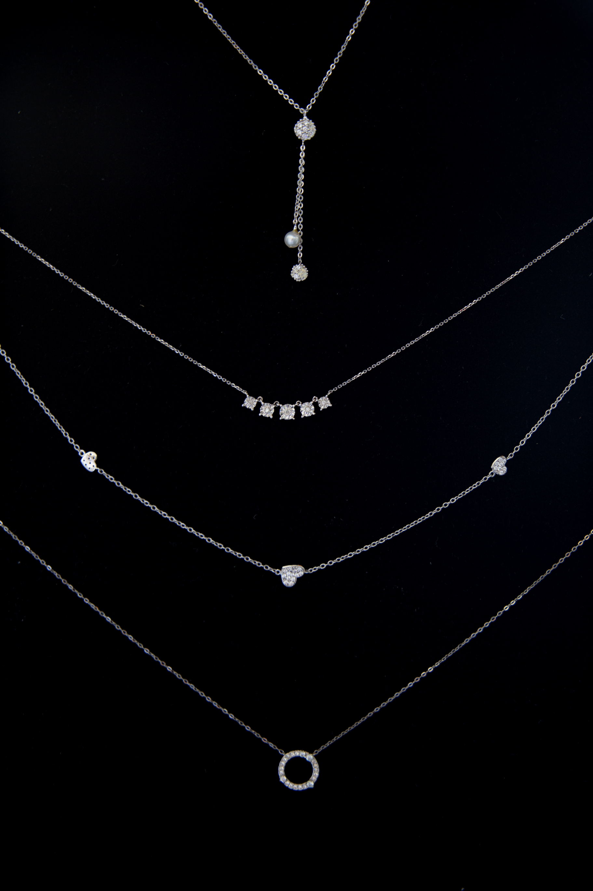

Oro Rosa

El oro rosa tiene un color rojo-rosado suave debido a una aleación con cobre y plata. Cuanto mayor sea el contenido de cobre, más rojas serán las joyas. Para el oro rosa, el nivel de pureza más alto es el de 18 quilates, por lo que esta joya se conoce como Crown Gold. La composición del oro rosa suele ser de un 75% de oro puro y un 25% de otros metales preciosos, lo que hace que el oro rosa sea de 18 quilates. Además del oro rosa, también existe el oro rojo y la diferencia entre ambos es difícil de ver. Ambos son una aleación con cobre. El oro con sólo cobre es oro rojo, pero cuando se complementa con plata, es oro rosa. La aleación estándar del oro rojo de 18 quilates consiste en un 75% de oro fino y un 25% de cobre. Las joyas de oro rojo se introdujeron en el siglo XIX y, por tanto, son todavía bastante nuevas.
Oro Blanco
El oro blanco se parece al platino o la plata, pero se fabrica combinando oro fino con una aleación que contiene paladio, plata o zinc. Esto da al oro amarillo un color blanco. Además, se aplica una capa de rodio alrededor del metal precioso. Este método es el mismo que se utiliza para bañar en oro o plata las joyas, pero hay que tener en cuenta que las joyas pueden presentar desgaste después de un tiempo. El oro blanco está siendo muy popular como opción para las alianzas de boda, tanto entre los hombres como entre las mujeres. Expresa lujo y elegancia y da un brillo sublime a un aspecto contemporáneo. El oro blanco es atemporal y a la vez moderno, por lo que es una buena elección para su alianza.
Oro Amarillo

El oro amarillo es la forma más clásica de oro. Las joyas de oro amarillo suelen ser de 14 o 18 quilates. El oro puro de 24 quilates sólo se encuentra en lingotes porque es demasiado blando para hacer joyas. Para fabricar joyas de oro amarillo, se añaden otros materiales, como el cobre y el zinc. En un anillo de 18 quilates, 18 de las 24 piezas son de oro fino. En el caso de las joyas de color amarillo, componemos la aleación de manera que se conserve el color amarillo original. Por tanto, las joyas de oro de 18 quilates tendrán un color más amarillo que las de oro de 14 quilates.